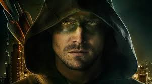
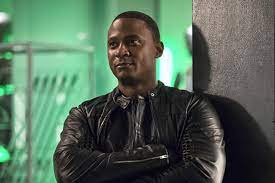
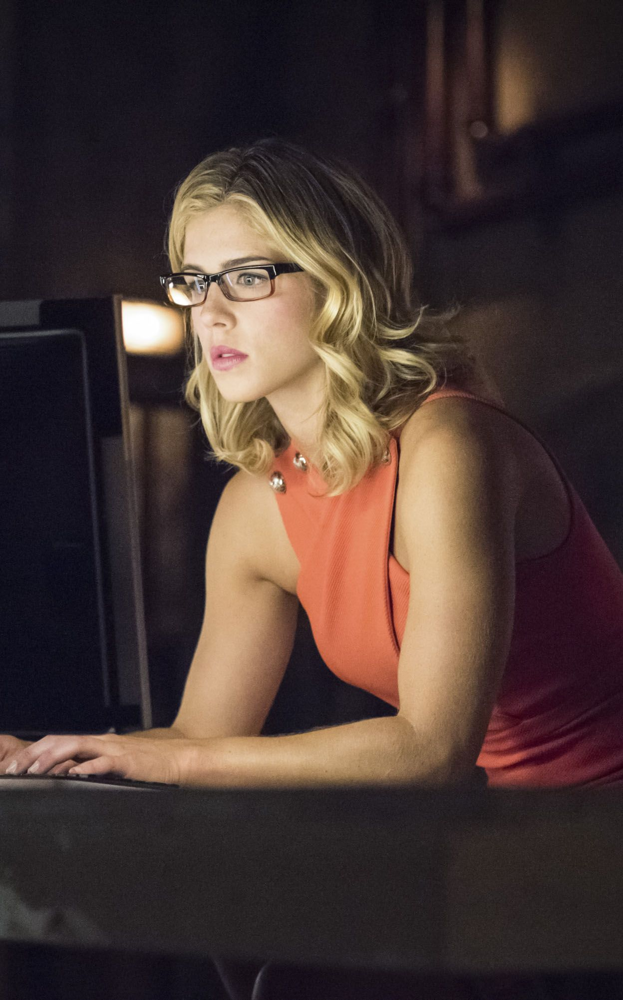

Arrow es una serie de televisión sobre el personaje de DC Comics Flecha Verde. La serie se estrenó el 10 de
octubre de 2012 en Estados Unidos, protagonizada por Stephen Amell como el personaje principal, Oliver Queen,
un justiciero que lucha contra el crimen.
Después de un violento naufragio, el multimillonario playboy Oliver Queen había desaparecido y dado por muerto
durante cinco años antes de ser descubierto con vida en una remota isla en el Pacífico. Cuando regresa a casa
a Starling City, su devota madre Moira, la tan amada hermana Thea, y su mejor amigo Tommy van a darle la
bienvenida a casa, pero tienen la sensación de que Oliver ha cambiado por su terrible experiencia en la isla.
Mientras, Oliver oculta la verdad sobre el hombre que se ha convertido, él está desesperado por reparar las
acciones que tomó como el niño que era. Más particularmente, busca la reconciliación con su ex novia,
Laurel Lance.
Durante el día, Oliver juega el papel de un mujeriego rico, despreocupado y descuidado como solía ser
-flanqueado por su devoto chófer/guardaespaldas, John Diggle- mientras que cuidadosamente oculta la
identidad secreta. Sin embargo, el padre de Laurel, el Detective Quentin Lance, está decidido a detener
la operación del justiciero en su ciudad. Mientras tanto, la propia madre de Oliver, Queen Moira, sabe mucho
más sobre el naufragio mortal de lo que ha dejado ver y es más cruel de lo que jamás pudo imaginar.

Oliver Queen

Jonh Diglee

Felicity Smoak